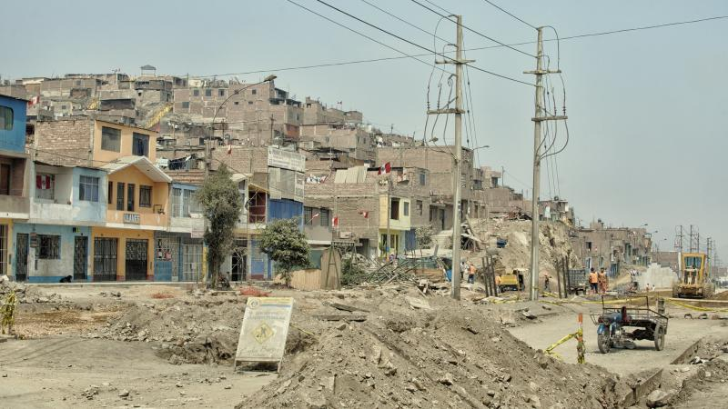

NUESTROS TEMAS MÁS BUSCADOS
Diálogos del bicentenario
Artículo el cual se hablará de diversos temas controversiales que ocurren actualmente en nuestro país.
Ir al link

Problemática San Juan de Lurigancho
San Juan de Lurigancho es uno de los distritos más extensos y poblados de Lima, Perú. A lo largo de los años, esta área ha enfrentado una serie de desafíos y problemas que afectan a su comunidad
Ir al linkArte y artesanía
Desde la cerámica de Chulucanas hasta los textiles de Cusco, el arte y la artesanía peruanos son excepcionales. Exploraremos las técnicas, los materiales y la importancia cultural de estas creaciones únicas.
Ir al linkHistoria y sitios arqueológicos
Sumérgete en la rica historia de Perú, desde las antiguas civilizaciones como los Incas y los Moche hasta la época colonial y la independencia.
Ir al linkMúsica y danzas tradicionales
La música y la danza son parte esencial de la vida peruana. Descubre géneros como la marinera y la huayno, así como los instrumentos típicos que los acompañan.
Ir al linkLenguas indígenas y diversidad lingüística
Además del español, Perú alberga una gran variedad de lenguas indígenas. Aprenderemos sobre su importancia cultural .
Ir al link